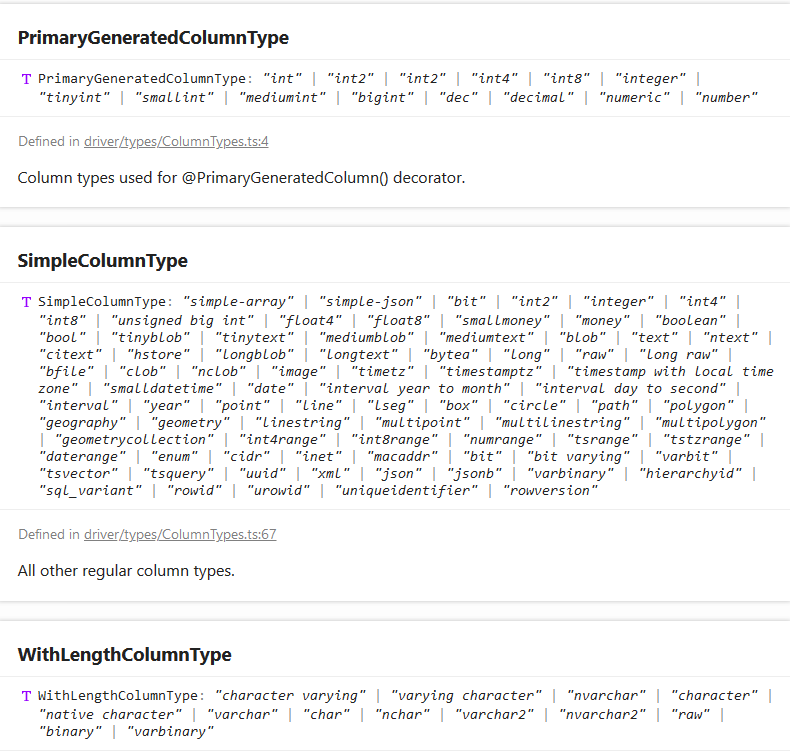

首先是typeorm的官方地址，
国内有人翻了中文版，不保证时效性
1 {
2 "compilerOptions": {
3 "module": "commonjs",
4 "noImplicitAny": true,
5 "removeComments": true,
6 "preserveConstEnums": true,
7 "sourceMap": true,
8 "outDir": "./dist",
9 "emitDecoratorMetadata": true, //typeorm特需
10 "experimentalDecorators": true //typeorm特需
11 },
12 "include": [
13 "src/**/*"
14 ],
15 "exclude": [
16 "node_modules",
17 "**/*.spec.ts"
18 ]
19 }
{
"type": "oracle",
"host": "10.16.2.41",
"port": 1521,
"username": "admin",
"password": "admin",
"sid": "ORCL",
"synchronize": true,
"logging": true,
"entities": [
"src/entity/**/*.ts"
],
"migrations": [
"src/migration/**/*.ts"
],
"subscribers": [
"src/subscriber/**/*.ts"
]
}
1 {
2 "name": "Current TS File",
3 "type": "node",
4 "request": "launch",
5 "program": "${workspaceRoot}\\node_modules\\ts-node\\dist\\bin.js",
6 "args": [
7 "${relativeFile}"
8 ],
9 "cwd": "${workspaceRoot}",
10 "protocol": "inspector"
11 }
1 import "reflect-metadata";
2 import {createConnection} from "typeorm";
3 import {xxx} from "./src/entity/xxx"; //引入数据表结构映射文件
4
5 createConnection().then(async connection => { //连接参数为空时自动按照路径下ormconfig.json信息连接
6 /*let a = await connection.query(
7 `SELECT * FROM xxx`
8 ); *///直接使用原生sql语句查询
9
10 let a = await connection.manager.find(xxx) //使用连接器查询 connection.manager
11 console.log("result: ", a);
12 }).catch(error => console.log(error));在src/entity/下构建数据表实体结构xxx.js，格式参考官网
在cmd根路径运行npm start，或使用vscode调试
从Sequelize转移到typeorm，是因为sequelize官方不支持连接Oracle
typeorm像名字中描述的那样，是个使用typescript编写的、类型系统非常完整的数据库关系映射，放张数据类型截图：

这还是js吗？当然，如此完整的类型系统得益于typescript，我们也可以在构建时酌情使用类型声明，因为它不是必须的（本质仍是js）
很多类型都可以使用js原生类型+长度代替，是否使用专用类型声明取决于实际需求
根据数据库自动生成/更新映射文件脚本会相对复杂
typescript也是初次接触，文章只是通过短短几星期的摸索得来，内容难免有误，若有错误还请点拨，谢谢